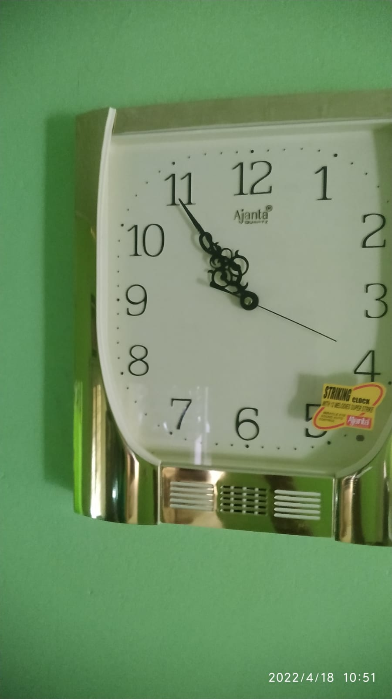
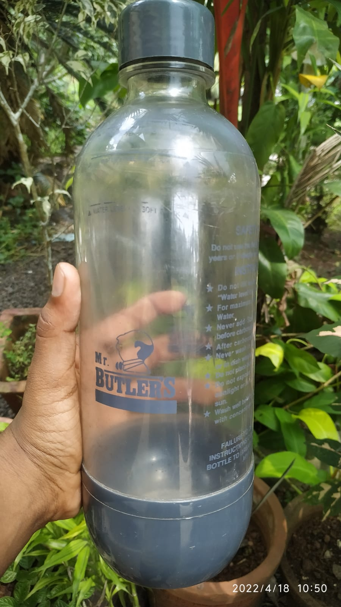

google lens vs Mobilenet
case study between google lens and Mobilenet
Mobilenet model is trained on
1.3million images
case study between google lens and Mobilenet
Mobilenet model is trained on
1.3million images
1.3million images
-
test image-speaker

- test image-clock 
- test image-bottle 